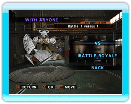
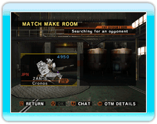
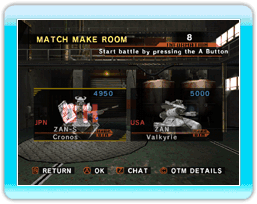

15 |
VS en Modo Conexión Wi-Fi de Nintendo |
 |
|
 Elige "Con cualquiera" ("WITH ANYONE") y establece las reglas para las batallas tal como se muestra en la pantalla de la derecha  Una vez que las reglas para la batalla han sido establecidas, pasas a la Sala de creación de partida. (Dependiendo de la calidad de la Conexión Wi-Fi de Nintendo de los jugadores, la espera para la batalla puede variar)  Cuando un jugador pasa la Sala de creación de partida, pueden comenzar la batalla oprimiendo  para finalizar las reglas. Al hacer eso, un contador aparecerá. La batalla comienza cuando el contador llega a cero. para finalizar las reglas. Al hacer eso, un contador aparecerá. La batalla comienza cuando el contador llega a cero.*Una vez finalizado, las reglas de batalla no pueden cambiarse. . Si por el contrario deseas pelear contra otro oponente, oprime  antes de que comience la batalla. Entonces saldrás de la Sala de
creación de partida, establecerás las reglas para la próxima batalla,
volverás a la Sala de creación de partida y buscarás un nuevo oponente. antes de que comience la batalla. Entonces saldrás de la Sala de
creación de partida, establecerás las reglas para la próxima batalla,
volverás a la Sala de creación de partida y buscarás un nuevo oponente.
|
 para abrir una ventana y seleccionar el mensaje que desees enviar.
(Este mensaje reflejando funcionalidad también está disponible en
en el Modo VS.)
para abrir una ventana y seleccionar el mensaje que desees enviar.
(Este mensaje reflejando funcionalidad también está disponible en
en el Modo VS.)  |
 |
 |